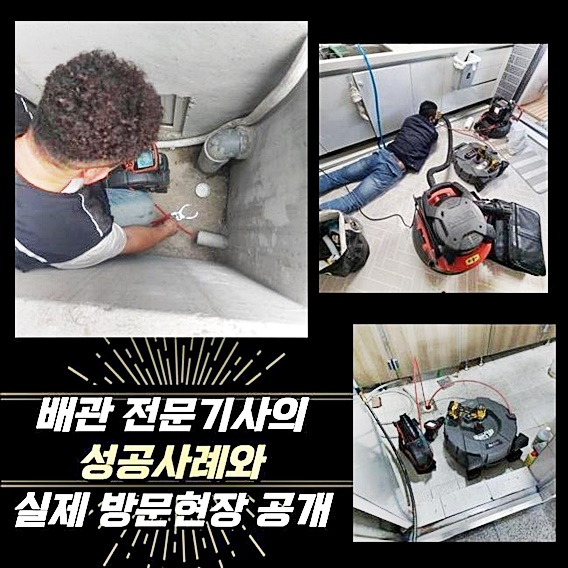
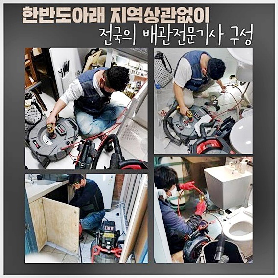
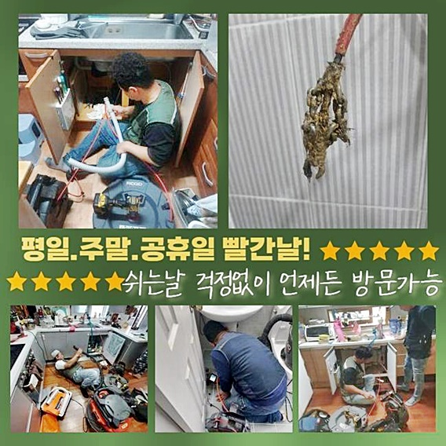
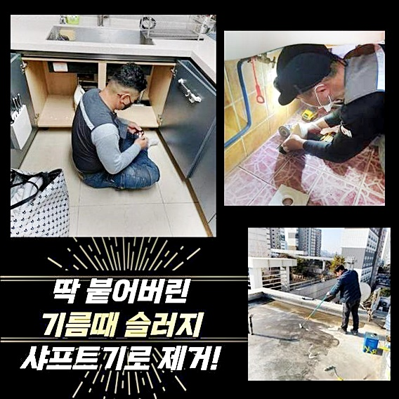
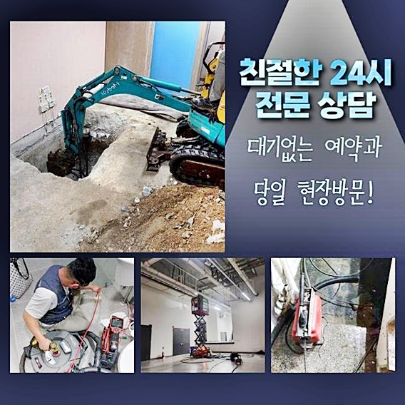
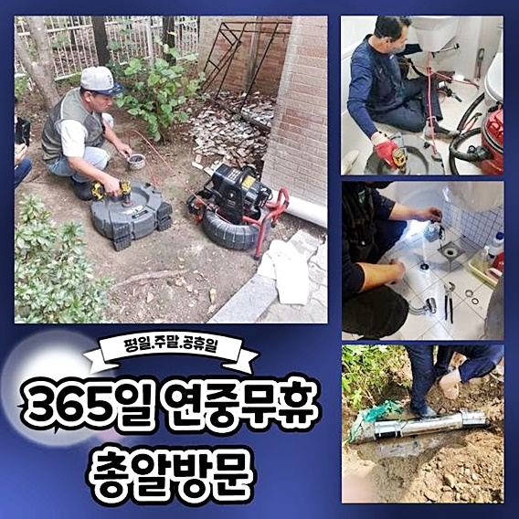

🏠 마포 토정동화장실하수구뚫음 상암동 하수관고압세척 누수탐지
용인 하수구막힘 전문 시공 후기

📋 작업 개요
- 위치: 용인
- 서비스 유형: 하수구막힘, 배관막힘, 맨홀막힘, 누수수리, 역류해결, 뚫는업체, 배관청소, 고압세척
- 작업 일시: 2024. 9. 25. 17:56
- 업체명: 하수구수사대 (010-5615-2118)
🔍 문제 상황
마포 토정동화장실하수구뚫음 상암동 하수관고압세척 누수탐지
막힘발생시 여러분들께선 어떠한방법을 통해 해결하시려고 하고 계신가요
대부분은 셀프적인 방법으로 대처하려고 하십니다
오늘의 포스팅은 음식점상가에서 하수도가막혀서 문의를받고 방문하여 작업해드린 현장사례를 소개하겠습니다
영업오픈을 준하시던 고객님께선 물을이용할때 외부하수구에서 역류현상까지 발생하셔서 저희에게 의뢰하신것인데요
전문장비를 챙긴뒤 목적장소로 조속히 방문드렸습니다
현장에도착한후 마중나와있으시던 고객님과 인사했어요
준비하고계시던 영업이 방해되지않으려면 저희업체가 해드릴수있는건 배관을 뚫어내는것이므로 최선을다해 작업에 몰두해야겠다는 생각으로 임했어요
하수구가위치한 바깥쪽으로 자리를옮겨보았죠
외부배관에서 역류문제들과 많은양의흙이 존재하는것에 대하여 의문이드셨다고 말씀해주셨어요

🔎 원인 분석
💡 전문가 진단: 정밀 진단 장비를 사용하여 슬러지의 고착 여부를 판명하고 타격/세척 작업을 실시했습니다.
이러한부분은 건물관리자와 상의를통하여 합의를해보는게 좋은방법이라고 말씀드렸어요
이같은상황은 전에살고계시던 거주자분이나 상가관리자에게 책임소재에 대해서 물을수있어 수리비용에 있어서 청구할수있어요
전화상으로 전달받았던 정보와같이 바깥맨홀에 흙같은것이 들어차있었네요
여기서 배수관막힘이 발현되었다면 내부하수구에서 배수상태가 원활하지 않음으로 추정할수있었어요
짐작한대로 의뢰인분이 내부쪽에있는 바닥배관에서 물이넘친다고 말해주셨죠
곧장수리에 들어가기로했어요
주방쪽으로 들어가서 바닥쪽에있는 하수구부분에 물을부어봤는데요
생각했던대로 물이빠지지않고 물이넘치고 있었어요
내부관이막혀 올바른 배수상태로 이어지는것이 불가능하여서 발현된문제였어요
외부쪽으로나가 작업해보기로 결정했어요
고압세척기를 준비했어요 바깥에서 하수구작업을 착수해보기전에 점검을해봤더니 전동스프링기로 뚫은흔적이 보였습니다

🔧 작업 과정
이같은현상은 스프링기계로 뚫을수는있지만 구멍을 뚫어내는정도에 불과해서 잠깐의조치는 가능하겠지만 완벽히 뚫는결과로 이어지지못해 잠시후에 다시막힐수있죠
그러므로 작업진행시 꼼꼼하게 진행해봐야하는게 이같은이유로 인해 그런것이죠
외부배수관에 높은압력의 물을쏘면서 고압청소를 실시해요
의뢰자의 염려와는달리 막힌곳이점점 뚫리기시작했죠
안속에막혀있던 오염물질이 제거되며 물과섞이면서 나왔는데요
이물질로 쌓여있었던 외부관주변이 두눈으로보이기 시작했답니다
고압청소를 반복하여 진행하니 잔여물질들도 꼼꼼히 소거시킬수있었어요
하수구내시경을 투입시켜 배관속모습을 체크해보니 깨끗해진 하수구의모습을 확인할수있었어요
내부쪽으로 자리를옮긴뒤 내부배관에 물을부으니 정상적인상태로 물이내려가는걸 파악한뒤 오늘작업을 끝맺을수있었어요
영업시설에서 발생된 막힘사례를 일러드렸는데요
매장같은곳에서 막힘이일어나 물자체가 흘러가지않아 주방하수구를 사용하지못하면 경제적인 손해까지 보시게되는데요
이런경우에는 꼼꼼한세척을 진행해주는곳을 신속히 호출하셔야해요
해당기계로 성공하는결과를 만들수가있기 때문이에요
오늘과같이 음식점현장은 하수관이막히면 모든업무들이 어려워집니다
스스로해결하여 해결이되는 경우라면 좋지만 해결되지않는다면 전문인을호출해 대처해봐야지만 운영하는데있어 불편한것없이 진행할수있어요
오늘작업처럼 기름사용이 즐비한 장소에서는 빈번히 막힘문제를 일으키기에 이런부분에 대해서 인지하셔야해요
막히는현상을 내버려두지말고 저희와같이 해결해보시는건 어떨까요


✅ 작업 완료
방치하게되면 2차적인문제로 이어질수가있으니 징조가나타날때 조치를 취해보실것을 추천드립니다
고압세척도구를 갖추고있어 신속처리할수있는 저희에게 맡겨보세요!
투명한 작업계획으로 공개하고있으니 과도한비용으로 요구되실까 우려하지마세요!
전국어디든지 한시간안으로 현장도착이 가능하오니 안심하세요!
이것말고도 궁금한것이 있다고한다면 맘편히 전화하셔서 질문하시면 상세한상담으로 맞이하겠습니다




⚠️ 베란다 누수 및 방수 관리 방법
- ✅ 비가 많이 올 때 창틀 주변이나 아래층 천장에 얼룩이 생기는지 정기적으로 확인해 보세요.
- ✅ 우수관 주변 실리콘 마감이 들뜨거나 깨진 틈새가 있는지 손상 여부를 수시로 체크하세요.
- ✅ 베란다 바닥 타일의 줄눈(메지)이 소실되면 그 틈으로 물이 침투하여 누수가 유발됩니다.
- ✅ 누수 의심 증상 발견 시 방치하면 아래층 손실이 커지므로 즉시 전문가의 진단을 받으십시오.
💡 핵심 정리
- 확실한 장비 작업(내시경 점검 및 샤프트 스케일링)으로 원인을 뿌리 뽑습니다.
- 작업 후 1년 이내에 동일한 부위 재발 시 100% 무상 A/S 서비스를 보장합니다.
- 서울 · 경기 · 인천 전 지역에 24시간 언제든 긴급 출동할 수 있도록 항시 대기 중입니다.
❓ 자주 묻는 질문 (FAQ)
🚨 용인 하수구막힘 문제로 고민이신가요?
정확한 원인 진단과 확실한 시공으로 재발 없는 해결을 약속드립니다.
24시간 긴급 출동 | 서울 · 경기 · 인천 전지역 | 1년 내 재발 시 무상 A/S